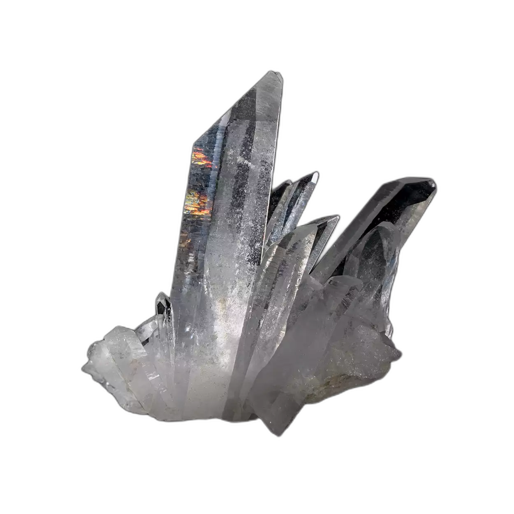
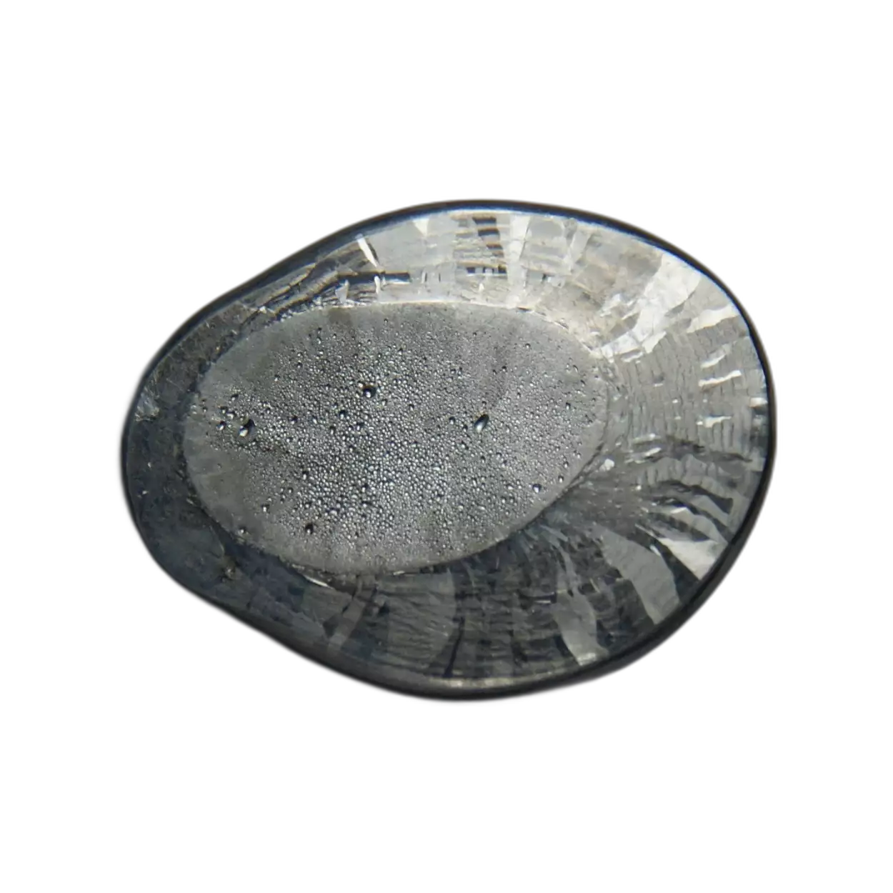

Une journée en compagnie de Marcell Mars & Valeria Graziano.
Mercredi 14 janvier
Chaianka : qu’est-ce qu’une conversation avec l’IA ?
Workshop
9h
Esadse Pôle numérique
L’IA est peut-être la première technologie que nous comprenons plus clairement en réfléchissant à notre rencontre avec elle qu’en connaissant ses mécanismes. Néanmoins, révéler les mécanismes par la pratique nous aide à réfléchir et à maintenir une distance critique et s’entraîner avec d’autres, et non seul, est un bon début.
Chaianka.com est une application conçue pour permettre à deux personnes de discuter avec une IA. Grâce à son interface web, les utilisateurs peuvent inspecter et ajuster les principaux composants du circuit d’interaction. Faire passer un bot IA de la configuration habituelle en tête-à-tête, où l’industrie l’a mis en scène pour impressionner, à un espace partagé par plusieurs humains est tout sauf simple. Travailler à formaliser et à ajuster l’IA afin qu’elle évite les réponses maladroites ou absurdes devient à la fois un moyen d’apprendre à cadrer et à structurer la conversation humaine et un rappel ludique de la nature mécanique d’une machine.
Pirate Care tactiques contre la criminalisation de la solidarité.
Conférence
Mercredi 14 janvier 18h30
Bar de l’aube
61 Rue Antoine Durafour, 42100 Saint-Étienne
entrée libre, bar sur place.
Pirate Care est le nom donné aux moyens utilisés par les gens pour se soutenir mutuellement lorsque les soins sont privés de financement, contrôlés et transformés en frontière, en facture ou en contrat de comportement. Ce projet a débuté sous la forme d’un réseau transnational, mais il se présente également sous la forme d’un syllabus vivant et d’une bibliothèque, de rencontres et d’assemblées, ainsi que d’un livre (2025, Pluto Press) qui retrace les actions menées contre la criminalisation de la solidarité.
Au cœur de ce projet se trouvent deux questions : la mutinerie et la fédération. La mutinerie comme moment intime et collectif où l’on refuse les conditions qui nous sont imposées pour « mériter » des soins. La fédération comme méthode permettant de relier ces refus au-delà des différences, de construire une infrastructure de soins commune sans attendre d’y être autorisé, et d’apprendre à se coordonner sans s’effondrer dans une ligne de commandement unique.
Valeria Graziano est une théoricienne de la culture, une universitaire et une organisatrice d’événements ayant une formation en théorie politique et en histoire de la performance artistique. Elle travaille au Centre d’études avancées de l’université de Rijeka. Au fil des ans, elle a participé à de nombreuses initiatives de recherche dans le secteur culturel et les mouvements sociaux, en se concentrant sur la pédagogie populaire et la politique des loisirs, les pratiques de réparation et le refus du travail gratuit, les soins et le piratage. Elle est co-initiatrice du projet PirateCare.
Marcell Mars est un activiste, un chercheur indépendant et un artiste. Son travail a largement contribué au développement de la société civile en Croatie et au-delà. Marcell est l’un des fondateurs du Multimedia Institute - mi2 (1999) et du Net.culture club MaMa à Zagreb (2000). Il est membre de la Creative Commons Team Croatia. Il est à l’origine du label d’édition GNU GPL EGOBOO.bits (2000), et de divers événements et rassemblements dans le domaine du hacking et des cultures numériques, dont les réunions SkillSharing, réunissant des passionnés de technique et de partage. Il est également à l’origine des projets PublicLibrary (2012) et Memoryoftheworld.org, des infrastructure sociotechniques créées pour faciliter l’accès universel à la connaissance. Marcell joue souvent le rôle de narrateur du projet.
https://monoskop.org/Marcell_Mars

Conférences
Autodétermination numérique
Jeudi 12 Février 18h
Bar de l’aube
61 Rue Antoine Durafour, 42100 Saint-Étienne
entrée libre, bar sur place.
RTFM – Read The Feminist Manual
Mara Karayanni
Dans cette présentation, nous aborderons la pratique des serveurs trans*féministes, leur utilité, la manière dont nous pouvons prendre soin des machines en tant qu’infrastructures affectives, et comment nous pouvons réinventer un langage technique plus inclusif, au-delà des préjugés sexistes qui prédominent dans les communautés de logiciels libres et open source.
Mara Karayanni (Μάρα Καραγιάννη) est un.e artist.e et technologue originaire de Grèce. Le travail de Mara porte sur les médias informatiques et analogiques pour l’édition, la sérigraphie, la programmation informatique, la création de manuels techniques artistiques, et la rédaction de textes critiques sur le genre concernant l’internet et les technologies libres et open source. Mara fait partie des serveurs féministes Anarchaserver et Systerserver, qui hébergent des mailing listes, mastodon et peertube, du streaming et des œuvres d’art expérimentales vidéo sur le cyberféminisme et le technoféminisme. Mara a étudié les arts graphiques à l’École des beaux-arts d’Athènes et est titulaire d’un master en design média du Piet Zwart Institute de Rotterdam (2008). Mara vit entre Bruxelles et Londres.
Tuvalu, une nation numérique ?
Crise écologique et transformations de la souveraineté
Nicola Manghi
Tuvalu, petite nation insulaire située au milieu de l’océan Pacifique, se trouve aujourd’hui menacée de disparition en raison du réchauffement climatique et de l’élévation du niveau de la mer qu’il entraîne. Pour répondre à cette menace, le gouvernement de Tuvalu a avancé une proposition sensationnelle : se convertir en « la première nation numérique du monde ». Dans cette conférence, nous explorerons les conséquences possibles de cette idée nouvelle et radicale, sans manquer d’en souligner certaines implications potentiellement sinistres.
Nicola Manghi est anthropologue. Depuis son doctorat, il étudie Tuvalu, un petit pays insulaire d’Océanie qui, menacé par les effets du réchauffement climatique, est en train de transformer le sens même de la souveraineté. Après avoir travaillé pendant deux ans comme chercheur postdoctoral à l’EHESS, il est désormais chercheur postdoctoral à l’Université de Turin. Il est co-rédacteur en chef du Journal de la Société des Océanistes. Il a traduit en italien des ouvrages de Bruno Latour et d’Isabelle Stengers.
Conférences
Mise en circulation
Jeudi 19 Mars 18h
Bar de l’aube
61 Rue Antoine Durafour, 42100 Saint-Étienne
entrée libre, bar sur place.
Du droit de parcourir la terre
Sarah Vanuxem
Depuis l’aube de la modernité, nous assistons à une interdiction progressive du droit de vagabonder et de vivre en nomade. D’un point de vue écologique et éthique, il est pourtant vital de retrouver un monde traversable, tant pour les humains que pour les autres qu’humains. Si le droit d’avant la loi a pu être présenté comme celui de prendre et d’enclore la terre, le droit hors la loi a été également défini tel celui de disposer des animaux sur un libre pâturage. D’où cette proposition de refondre le droit occidental à partir d’un droit de parcourir la terre.
Juriste, Sarah Vanuxem est maîtresse de conférences à l’Université Côte d’Azur, pensionnaire de la Villa Médicis pour l’année 2022-2023, actuellement en délégation à l’Agence Française de développement. Son travail porte sur les transformations que le droit émergent de l’environnement fait subir à la tradition notre tradition juridique. Elle est notamment l’autrice de Les choses saisies par la propriété (IRJS, 2012), La propriété de la terre (Wildproject, 2018), Des choses de la nature et de leurs droits (Quae, 2020), Du droit de déambuler (Wildproject, 2024).
Des objets liés au monde de l’art, du shiatsu, une voiture, du troc...
Victor Brustet
Depuis 2021 je collectionne des productions liées au monde l’art contre des soins en shiatsu. Je me déplace de collectifs en collectifs avec ma vielle 206. Je tisse un réseau de lien avec des habitants du monde de l’art pour en faire émerger des formes nouvelles. Me confronter en pratique à la figure du collectionneur sans en avoir les moyens et opérer un glissement de la collection vers un geste collectif.
Victor Brustet est artiste et spécialiste en Shiatsu (Massothérapie Japonaise). Il vit et travaille à Grenoble. Diplômé de l’école des Beaux-Arts de Grenoble (ESAD) en 2017 ainsi que de deux écoles de Shiatsu en 2019 et 2022. Depuis 2023 il travaille a son compte en tant que praticien Shiatsu. A travers ses pratiques récentes il met en jeu et questionne l’économie de l’art et sa hiérarchie sociale.

Une journée en compagnie de RYBN.
Mercredi 14 janvier
Workshop
Protocoles d’autodéfense permacomputationelle contre l’informatique laborieuse.
9h
Esadse Pôle numérique
À l’occasion de cet atelier, nous proposons de faire ensemble un « Perceptron humain ». Nous suivrons un protocole imaginé en 2015 à Pact Zollverein (Essen) qui décompose en une série d’étapes manuelles la fabrique et l’entraînement d’un Perceptron.
Ce tout premier réseau de neurones conçu par Mc Culloch & Pitts en 1946, et implémenté en 1964 par Frank Roseblatt, est une brique historique de l’apprentissage machine et de la dite « intelligence artificielle ». Ainsi cette petite expérience collective visera à rendre sensible la logique réductionniste à l’œuvre
dans ce que nous préférons nommer l’« informatique laborieuse ».
Le « Perceptron humain » est l’un des Protocoles d’autodéfense permacomputationnelle contre l’Informatique Laborieuse, expériences à réaliser en atelier que le collectif RYBN a imaginées ou mises en œuvre depuis une décennie et qui ont en commun d’aborder l’informatique en évitant soigneusement l’usage des ordinateurs.
Les protocoles abordent le numérique par le biais de ses biais structurels : quantification et simplification du monde, biais des modèles mathématiques, limites des règles algorithmiques, analyses discriminantes, réductionnisme des logiques rationnelles. Ces protocoles accompagnent le projet de recherche médiarchéologique « Human Computers » (2015-2025) qui explore les racines historiques entremêlées des liens entre travail et informatique.
https://www.rybn.org/human_computers/
Conférence
Les brevets comme ouvroirs d’imaginaires potentiels de l’industrie et du capitalisme cognitif.
18h30
Bar de l’aube
61 Rue Antoine Durafour, 42100 Saint-Étienne
entrée libre, bar sur place.
Les brevets appartiennent à une forme de littérature dite opérationnelle (Harun Farocki) : on leur attribue une certaine autorité à « faire advenir ». Mais souvent, l’invention décrite n’a pas réellement vocation à être mise en œuvre, et vise plutôt à préempter le futur et à
imposer un certain imaginaire. C’est à cet endroit aussi que les brevets participent à l’extension de l’empire du capitalisme, renforçant son système immunitaire et déplaçant les fenêtres d’Overton pour rendre des futurs dystopiques « acceptables ». En partant d’une série de projets que
le collectif RYBN.ORG a entrepris autour des brevets depuis une dizaine d’années [IPPI, ou Institut Précognitif de la Propriété Industrielle (2015), IPPI.CC ou Cabinet de Curiosité de la propriété industrielle (2018), DCVCEV ou Dispositif critique de veille et de contrôle d’expansions vectorialistes en collaboration avec The Institute of Diagram Studies (2023)], il s’agira de réfléchir à comment se soustraire aux processus de récupération et d’appropriation, ou comment les instrumentaliser pour les retourner contre le capitalisme même.
https://rybn.org/IPPI/
RYBN.ORG (1999) est un collectif d’artistes qui mène des enquêtes extra-disciplinaires sur le fonctionnement de systèmes complexes et opaques : les krachs du trading algorithmique, les circuits financiers offshore, l’intelligence artificielle artificielle (AAI) et le digital labor, la colonisation du vivant par la propriété industrielle, et tous les angles morts des mythologies techno-libertariennes. Il en ressort des œuvres documentaires (cabinets de curiosités, archives labyrinthiques) et des dispositifs performatifs activés dans les milieux techniques qui les ont inspirés.
https://rybn.org/
Événements organisés par les laboratoires ECLLA et Random(lab) de l’ESADSE.
L’Infokiosque de l’Amicale de la photocopieuse (brochures en libre accès sur travail artistique, critique de la propriété intellectuelle et dispositifs de diffusion alternatifs) sera disponible pendant les événements.
Fonte en usage: Syne de Bonjour Monde et Junicode Condensed de Peter S. Baker (fork de Florian Fromager)
Images en usage:
Plomb (Chemical Elements, CC BY 3.0, https://commons.wikimedia.org/wiki/File:Lead-2.jpg),
(Alchemist-hp, CC BY-NC-ND 3.0, https://commons.wikimedia.org/wiki/File:Lead_electrolytic_and_1cm3_cube.jpg),
(Robert M. Lavinsky, CC BY 3.0,https://commons.wikimedia.org/wiki/File:Lead-288819.jpg),
Hübnerite et Quartz(Kritzolina, CC BY-SA 4.0, https://commons.wikimedia.org/wiki/File:H%C3%BCbnerite_and_Quartz_01.jpg),
Quartz (JJ Harrison, CC BY-SA 2.5, https://commons.wikimedia.org/wiki/File:Quartz,_Tibet.jpg)